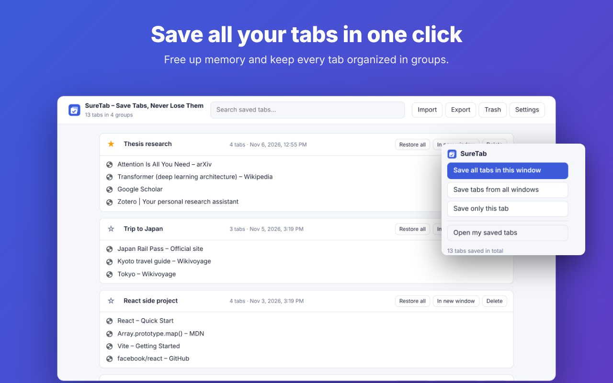
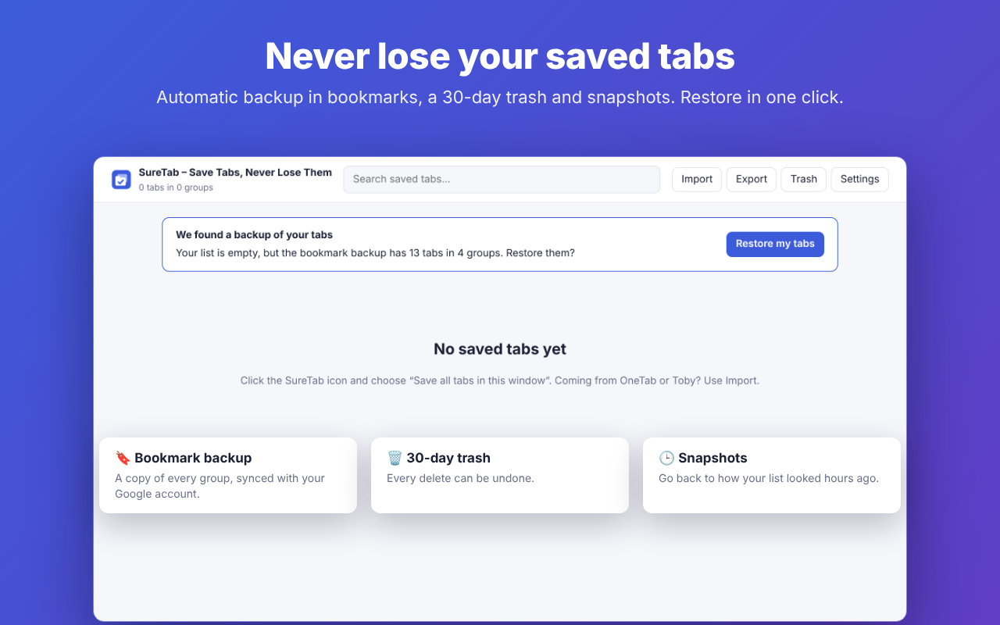

SureTab saves all your open tabs into a tidy list with one click — and keeps three independent backups so they never disappear.
Works in Chrome, Brave, Vivaldi and other Chromium browsers.
Tab savers have one recurring complaint: "it deleted all my saved tabs". SureTab was designed so that can't happen.
Every group is mirrored to a "SureTab backup" bookmarks folder that survives browser updates and syncs with your Google account. If your list is ever empty, SureTab restores it in one click.
Deleted groups and links stay recoverable for 30 days. Every delete can be undone.
Go back to how your list looked hours ago, even after a bad import or a big cleanup.
Save this window, all windows or a single tab — from the toolbar, the right-click menu or Alt+Shift+S.
Restored tabs don't load until you open them, so a big group uses almost no memory.
Paste your OneTab export or drop your Toby file into Import. Nothing to retype.
No account, no servers, no ads, no tracking. Your tabs stay in your browser. SureTab is open source — anyone can read the full code on GitHub.
Available in English and Spanish, in light and dark mode.

Everything above is free, forever. Pro adds a backup outside your computer.
Secure checkout by Lemon Squeezy, our merchant of record. Prices in USD; local taxes may apply.
No. SureTab Pro uses Google's limited "drive.file" permission, which only lets it access the files it creates (a "SureTab" folder). Your backup goes straight from your browser to your Drive; it never passes through our servers.
Yes. Saving, restoring, the bookmark backup, the trash, snapshots, import and export are free with no limits.
Yes, within 14 days of purchase if your license key has not been activated, or if SureTab Pro doesn't work for you and we can't fix it. See the refund policy.
In OneTab, click "Export URLs" and copy the text. In SureTab, click Import and paste it. Your groups are added; nothing is replaced.
Write to matisantoro03@gmail.com or open an issue on GitHub.